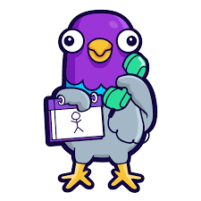

Gartic Phone
If you want something completely unique for your group of friends, Gartic Phone also has the option to create a custom mode.  The custom mode is something that allows you to change certain settings such as the time requirement, task flows, turns, secrecy and a few other things. The final result is a game more suited to your playing style.
Gartic Phone is available on PC and tablet and smartphone in different languages (including Hebrew, Persian, Korean, and Vietnamese).As a browser-based online game, there are no limits regarding where the experience can be found. The only real requirement is an internet connection.